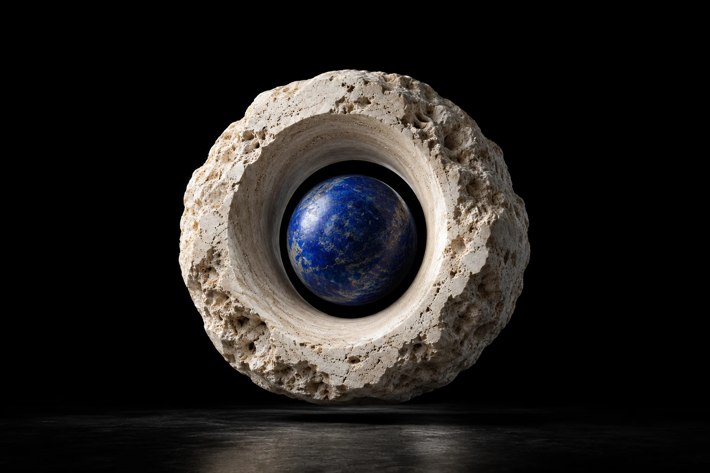
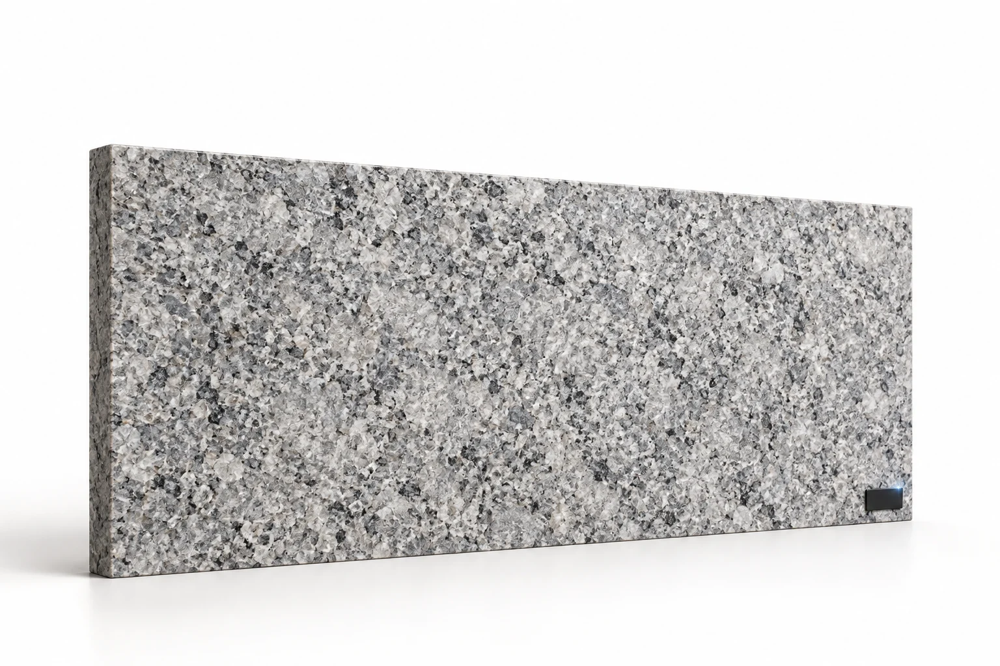
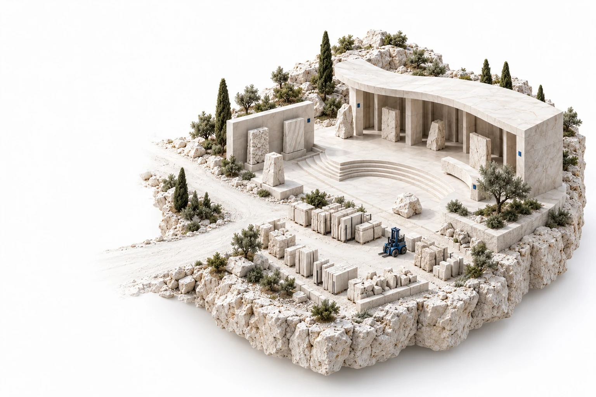

Piedra.
En otra
dimensión.
Lo que puedes tocar.
Y todo lo que puedes conectar.
El futuro
también se
talla.
Una pieza puede ser arquitectura,
diseño e información.
Todo al mismo tiempo.
La forma invita.
La identidad continúa.
Una presencia.
Un recorrido propio.
De la cantera al gesto.
Del objeto al dato.
De una vida a la siguiente.
Origen.
Movimiento.
Transformación.
Memoria.
Cada veta es única.
Cada recorrido, también.
iD.stone vincula cada unidad con su origen, sus movimientos, sus documentos y las personas que intervienen en ella.
Explora una identidad ↗Lo invisible.
Ahora, visible.
Elige una etapa. Descubre cómo la identidad relaciona el material con lo que le sucede.

IDENTIDAD FÍSICA + REGISTRO DIGITALLa identidad conserva su historia.
Lote de origen asociado
Datos de ejemplo. La instalación se confirma con contexto y evidencia revisada; una lectura por sí sola no la acredita.
Empieza en origen.
Se extiende a todo.
El productor inicia la identidad. Cada agente continúa el recorrido dentro de sus permisos.
El diseño se ve.
La historia se descubre.
Toca un elemento. Abre su memoria.

La operación.
En tus manos.
Desconecta. Registra. Vuelve a conectar.
Experimenta cómo el dato acompaña al trabajo.
Lo que sucede,
queda registrado.
Captura local con identidad, fecha y ubicación. Autor de demostración: OP-01.
El envío se inicia cuando tú lo decides. La conciliación está simulada.
Capturar una vez.
Documentar mejor.
Los registros aceptados alimentan los campos disponibles. Los ensayos y las aprobaciones conservan su revisión responsable.
Ejemplo de preparación documental. No certifica cumplimiento ISO o UNE ni sustituye ensayos.
También cuenta
quién está detrás.
Identidad profesional, formación, asignación de EPIs y revisiones. Acceso según función y permisos.
Asignación simulada con acuse. Una lectura no acredita el uso correcto del EPI ni concede habilitación.
Continuidad
Consulta lo preparado y registra lo que ocurre, incluso sin cobertura.
A tu ritmo
Elige el momento de sincronizar y agrupa los envíos pendientes.
Control del dato
Define qué compartir. Los cambios externos se concilian al recuperar la conexión.
Prototipo funcional en tu navegador. Datos simulados, sin conexión a ERP, lectores o servidores CUEVA.
Conecta lo que
ya haces.
Reutilizar la información existente.
Automatizar donde aporta valor.
Continuar más allá de la fábrica.
01 RFID, QR y códigos de barras +
Una identidad, distintos medios de captura. Los códigos existentes pueden vincularse al mismo registro. RFID añade lectura por radio y captura múltiple en pasos controlados; su rendimiento se valida sobre el material real.
02 ERP, stock y albaranes +
Relaciona pedidos, unidades y documentos. Prepara borradores desde operaciones aceptadas y concilia estados entre centros. Las reglas, la numeración y la autorización se acuerdan con el sistema de gestión.
03 Evidencias para ISO y UNE +
Mapea requisitos a campos, fuentes y documentos. Autocompleta datos disponibles, marca ausencias y conserva la revisión. Las ediciones y requisitos aplicables se configuran por producto y uso; la herramienta no otorga certificaciones.
04 Retales y siguientes vidas +
Cada corte crea unidades relacionadas con su origen. El retal conserva geometría, acabado, ubicación y disponibilidad para evaluar un nuevo uso con la aptitud técnica necesaria.
05 Gemelo, eventos y asistencia IA +
Conecta el elemento físico con su representación, ubicación y mantenimiento. La asistencia puede señalar anomalías o datos incompletos para revisión humana, según las integraciones y reglas configuradas.
De la experiencia
al dossier.
Identidad, RFID, stock, documentación, personas y continuidad. Toda la propuesta de iD.stone en 15 páginas.